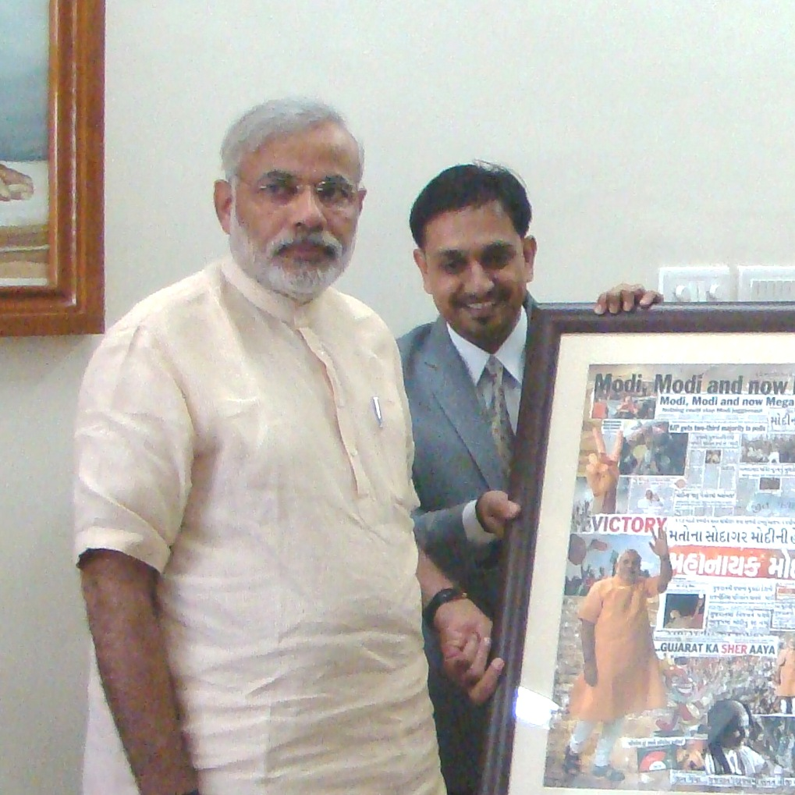

Gaurang has leveraged his communication acumen in the political arena, having worked with Shri Narendra Modi during his tenure as the Chief Minister of Gujarat.
Profession

28 Years of Advertising and Communication
Connecting Brands, Ideas and People
Gaurang Darji has navigated the complex world of advertising and communication for 28 years, delivering robust strategies for a diverse portfolio of brands, from local businesses to multinational giants, across sectors such as FMCG, consumer goods, media, healthcare and more. His professional mastery covers the full spectrum of brand engagement, including brand building, media management, digital communication, film production and activations.
01
A Strategist in High-Stakes Communication
He developed several impactful election campaigns for the BJP in Gujarat, showcasing his ability to craft narratives that resonate with mass audiences.
In the media landscape, he was a key member of the highly successful and influential Sachi Vat, Bedhadak campaign for Divya Bhaskar.
02
Writing, Thought Leadership and Communication
Gaurang seamlessly blends his corporate acumen with a deep passion for writing and thought leadership. He is an acclaimed author of multiple books across genres including fiction, self-help and satire. As a regular columnist for a leading vernacular newspaper, he consistently shares his unique perspective with a wide readership.
Above all, Gaurang is a dedicated thinker and communication expert who thrives on engaging with people and exploring the nuances of different communication styles, making every interaction an opportunity for connection and understanding.
Areas of Expertise
- Brand Building
- Media Management
- Digital Communication
- Film Production
- Brand Activations
- Political Communication
- Campaign Strategy
- Thought Leadership